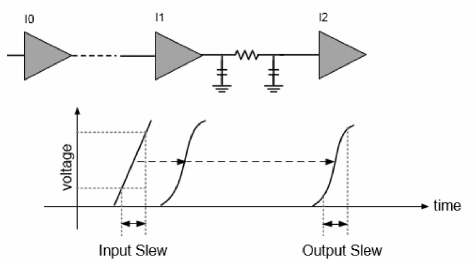
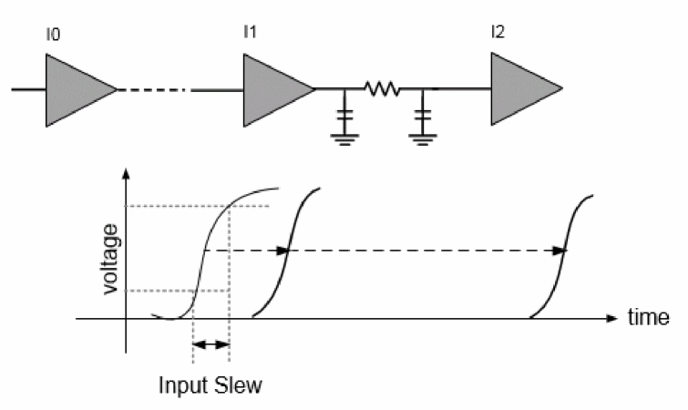
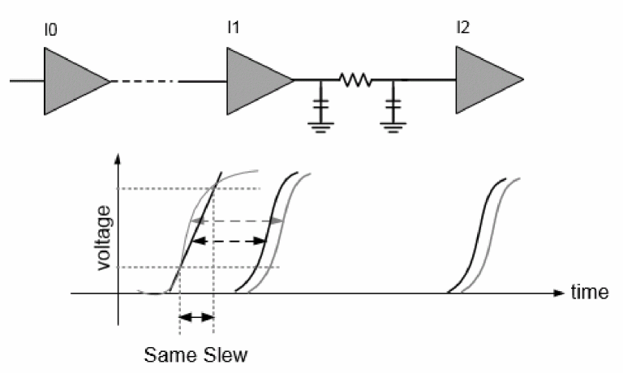

Limitations of Traditional Delay Calculators
Traditional delay calculators use delay as a function of the input slew and output load. With traditional delay calculators, a single linear slew value is used as the input to analyze a stage. This methodology cannot produce the desired accuracy that new technologies demand.
This is illustrated in the figure below.
Figure -4 Traditional Delay Calculation using Delay as function of slew and load

The advanced technologies (28nm and below) require waveform-based delay calculators to accurately calculate the delays based on waveforms. The waveform-based delay calculators use real waveforms as input to analyze a stage, as shown in the figure below.
Figure -5 Ideal Waveform based Delay Calculation

There are several shortcomings when you use traditional delay calculators. Some of these are:
- Traditional delay calculators use single slew to calculate stage delays. This may not produce accurate results.
-
Different waveforms with the same slew value produce the same delays.
Figure -6 Shortcomings of Traditional Delay Calculation

In the above figure, the grey waveforms indicate the input waveforms in an ideal case. The black lines indicate the linear input slew values and slew waveforms, respectively.
Here, the linear input slew value and the input waveforms use the same slew, however, the delay numbers are different. The long curve of the input waveform (grey) can produce larger delays as compared to the one produced with the linear input slew (black). Also, the measurement point shift can contribute to delay inaccuracy.
Return to top